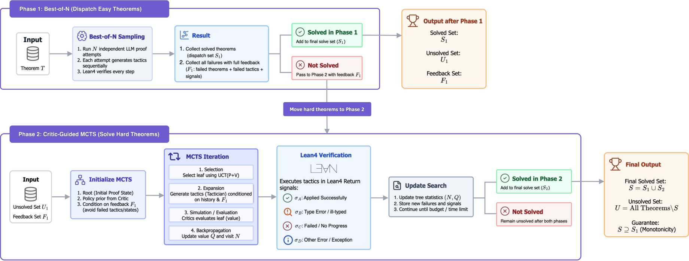

Uses Lean 4 verifier feedback and Mathlib premise retrieval to guide LLM-driven MCTS proof search, and releases a Lean 4 combinatorics benchmark.
Abstract
LLM-based formal provers often collapse rich verifier signals (syntax errors, type mismatches, partial goal progress) into a binary pass/fail bit. We present VERITAS, a zero-shot framework that routes every verifier signal back into proof search through a two-phase protocol: Best-of-N sampling first, then a critic-guided MCTS pass that ingests Phase 1 failures as explicit negative examples. The protocol preserves every theorem solved by its own Phase 1 sweep, so Phase 2's additional solves are attributable to feedback-driven exploration. VERITAS reaches 40.6% on miniF2F (vs. an independently run Best-of-5 at 36.9%, Portfolio 26.2%) and 7.3% on VERITAS-CombiBench, a 55-theorem combinatorics benchmark we release on which Best-of-5 (1.8%) falls below Portfolio (3.6%), exposing that unguided sampling hurts when correct lemma names must be recovered iteratively from verifier feedback. Artifacts are available on GitHub.
Problem
LLM-based formal provers usually reduce rich verifier output (syntax errors, type mismatches, partial goal progress) to a single pass/fail bit. That discards information that could guide proof search.
Approach
VERITAS is a zero-shot multi-agent framework with four roles sharing a proof state annotated with four Lean signals (syntax, type correctness, goal progress, completion): a Strategist, a Tactician (Claude Sonnet), a Critic (Claude Haiku), and a Mathlib premise Retriever. Phase 1 runs Best-of-N sampling. Phase 2 runs critic-guided MCTS on the unsolved theorems, feeding Phase 1 failures and their Lean error messages back in as negative examples. A batched Lean validation step checks all K candidates for a node in a single proof-checker call.

Figure 1 : VERITAS two-phase protocol. Phase 1: Best-of- N dispatch; failures feed corpus \mathcal{F}_{1} . Phase 2: Critic-guided MCTS on U_{1} with Lean signals \sigma_{A} – \sigma_{D} ; final S=S_{1}\cup S_{2} satisfies S\supseteq S_{1} .
Results
VERITAS solves 40.6% of miniF2F, versus 36.9% for Best-of-5 and 26.2% for a heuristic portfolio. On the released 55-theorem VERITAS-CombiBench it reaches 7.3%, while Best-of-5 gets 1.8% and the portfolio 3.6%; unguided sampling hallucinates Mathlib lemma names that Lean rejects.
Method
miniF2F (%)
CombiBench (%)
Portfolio (heuristic)
26.2
3.6
Best-of-1 Sonnet
29.1
1.8
Best-of-5 Sonnet
36.9
1.8
VERITAS Two-Phase
40.6
7.3
Overall solve rates on miniF2F and VERITAS-CombiBench